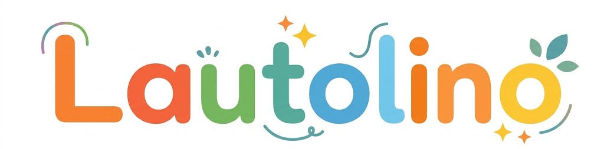

Silbenflug – Entwicklung. Schnell zwischen den drei Oberflächen wechseln.
VerwaltungAdmin, Schulleitung, Lehrkräfte
Kinder-AppAnmeldung mit Merkschlüssel, Silbenrunden
ElternseiteAnmeldung mit Elterncode, Fortschritt
Serverstatus wird geprüft …